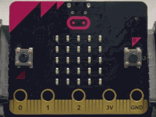
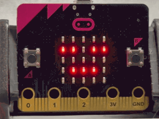
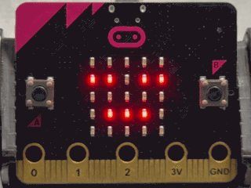
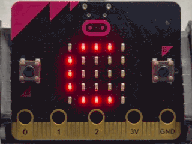
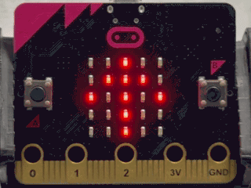

🔔体動アラームくん 🔔体動アラームくん
micro:bit の「かそくどセンサー」を使って、「じっとしていたら動こう」と知らせてくれるアラームを作ります。 micro:bit の「加速度センサー」を使って、「じっとしていたら動こう」と知らせてくれるアラームを作ります。
使い方
- 起動すると、プログラムで決めた時間がひょうじされる（サンプルコードでは30分） 起動すると、プログラムで決めた時間が表示される（サンプルコードでは30分）
- micro:bit をポケットに入れたり、つくえの上におく micro:bit をポケットに入れたり、机の上に置く
- 動かずに決めた時間がたつと、「Go」とひょうじされる 動かずに決めた時間が経つと、「Go」と表示される
- 動くと にっこりした顔 がひょうじされて、カウントがリセットされる 動くと にっこりした顔 が表示されて、カウントがリセットされる

ねらい
- 自分のしせいや、どれだけ動いたかに気づいて、けんこう行動をつづけられるようにする 自分の姿勢や、どれだけ動いたかに気づいて、健康行動を続けられるようにする
- ICTを活用したじこかんりの仕組みを学ぶ ICTを活用した自己管理の仕組みを学ぶ
チャレンジ
- 学校や自分の家でためしてみよう 学校や自分の家で試してみよう
- 自分にちょうどいいお知らせの時間を決めて、プログラムをかえてみよう 自分に丁度いいお知らせの時間を決めて、プログラムを変えてみよう
🛏️すいみんチェッカー 🛏️睡眠チェッカー
micro:bit の「かそくどセンサー」を使って、ねがえりの回数や大きな動きをカウントし、すいみんの様子をチェックできる「すいみんチェッカー」を作ります。 micro:bit の「加速度センサー」を使って、寝返りの回数や大きな動きをカウントし、睡眠の様子をチェックできる「睡眠チェッカー」を作ります。
使い方
- ねる前に micro:bit の B ボタンをおすと、カウントがリセットされて ねむった顔 がひょうじされる 寝る前に micro:bit の B ボタンを押すと、カウントがリセットされて 眠った顔 が表示される
- ねている間に大きな動きがあると、回数を自動でカウントする （3秒のロック時間あり） 寝ている間に大きな動きがあると、回数を自動でカウントする （3秒のロック時間あり）
- 朝、起きてBボタンをおすと、動いた回数がひょうじされる 朝、起きてBボタンを押すと、動いた回数が表示される

ねらい
- すいみんとけんこうのかかわりについて考えてみる 睡眠と健康の関わりについて考えてみる
- ICT を使って生活のきろく・かいぜんに取り組む ICT を使って生活の記録・改善に取り組む
チャレンジ
- 何日かきろくを取って、よくねむれた日とそうでない日の理由を考えてみよう 何日か記録を取って、よく眠れた日とそうでない日の理由を考えてみよう
- ねる前の行動とすいみんのかかわりを考えてみよう 寝る前の行動と睡眠の関わりを考えてみよう
💧水分ほきゅうアラームくん 💧水分補給アラームくん
micro:bit の「タイマーきのう」を使って、決まった時間ごとに水分ほきゅうをお知らせするアラームを作ります。 micro:bit の「タイマー機能」を使って、決まった時間ごとに水分補給をお知らせするアラームを作ります。
使い方
- 起動すると自動でタイマーがスタート 起動すると自動でタイマーがスタート
- プログラムで決めた時間がたつと「W」がひょうじされて、水を飲むサインになる（サンプルコードでは30分） プログラムで決めた時間が経つと「W」が表示されて、水を飲むサインになる（サンプルコードでは30分）
- B ボタンをおすと にっこりした顔 がひょうじされて、タイマーがリセットされる（ふたたび30分のカウントを開始） B ボタンを押すと にっこりした顔 が表示されて、タイマーがリセットされる（再び30分のカウントを開始）

ねらい
- 定期てきな水分ほきゅうの大切さをいしきする 定期的な水分補給の大切さを意識する
- ICT を活用したじこかんりの仕組みを学ぶ ICT を活用した自己管理の仕組みを学ぶ
チャレンジ
- 自分に合ったお知らせの時間を決めて、プログラムをかえてみよう 自分に合ったお知らせの時間を決めて、プログラムを変えてみよう
- 「水を飲んだら写真をとる」など、きろくをのこすほうほうを考えてみよう 「水を飲んだら写真をとる」など、記録を残す方法を考えてみよう
⏰じゅ業＆休けいタイマー ⏰授業＆休憩タイマー
micro:bit の「タイマーきのう」を使って、「じゅぎょうモード」と「きゅうけいモード」を切りかえるタイマーを作ります。 micro:bit の「タイマー機能」を使って、「授業モード」と「休憩モード」を切りかえるタイマーを作ります。
使い方
- A ボタンをおすと「C」がひょうじされて、じゅぎょうモードスタート（タイマーリセット、サンプルコードは45分） A ボタンを押すと「C」が表示されて、授業モードスタート（タイマーリセット、サンプルコードは45分）
- B ボタンをおすと「B」がひょうじされて、きゅうけいモードスタート（タイマーリセット、サンプルコードは10分） B ボタンを押すと「B」が表示されて、休憩モードスタート（タイマーリセット、サンプルコードは10分）
- 45分や10分がすぎると、自動で次のモードにかわる 45分や10分が過ぎると、自動で次のモードに変わる

ねらい
- 時間を守ることの大切さを学ぶ 時間を守ることの大切さを学ぶ
- ICT を活用したじこかんりの仕組みを学ぶ ICT を活用した自己管理の仕組みを学ぶ
チャレンジ
- 自分のじかんわりに合った時間にかえてみよう 自分の時間割に合った時間に変えてみよう
- ボタンをおさなくても自動で動くモードを考えてみよう ボタンを押さなくても自動で動くモードを考えてみよう
👀目のエクササイズナビ 👀目のエクササイズナビ
micro:bitを使って、目のストレッチ運動ができるガイドを作ります。 micro:bitを使って、目のストレッチ運動ができるガイドを作ります。
使い方
- 起動するとすぐにやじるし（↑→↓←）が 3 秒ごとにくり返してひょうじされる 起動するとすぐに矢印（↑→↓←）が 3 秒ごとに繰り返して表示される
- 画面のやじるしに合わせて目を動かす 画面の矢印に合わせて目を動かす
- 動かし終わったら B ボタンをおすと にっこりした顔 がひょうじされて、すぐにやじるしのひょうじにもどる 動かし終わったら B ボタンを押すと にっこりした顔 が表示されて、すぐに矢印の表示に戻る

ねらい
- 目のきんにくをほぐすしゅうかんを作る 目の筋肉をほぐす習慣を作る
- ICT を活用したじこかんりの仕組みを学ぶ ICT を活用した自己管理の仕組みを学ぶ
チャレンジ
- やじるしをひょうじする速さや、方向パターンを変えて、より自分に合ったストレッチを考えてみよう 矢印を表示する速さや、方向パターンを変えて、より自分に合ったストレッチを考えてみよう
本情報の内容 (添付文書、リンク先などを含む) は、作成日時点でのものであり、予告なく変更される場合があります。